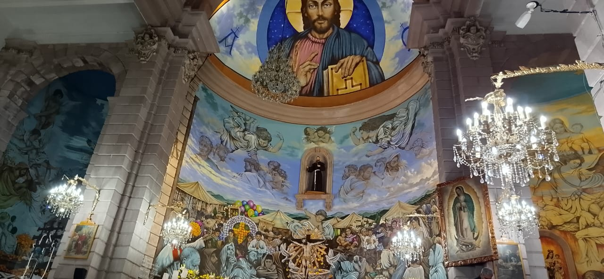
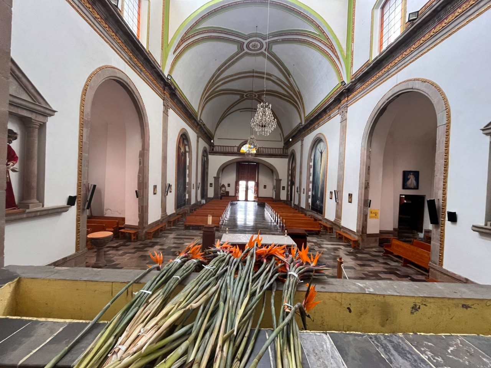
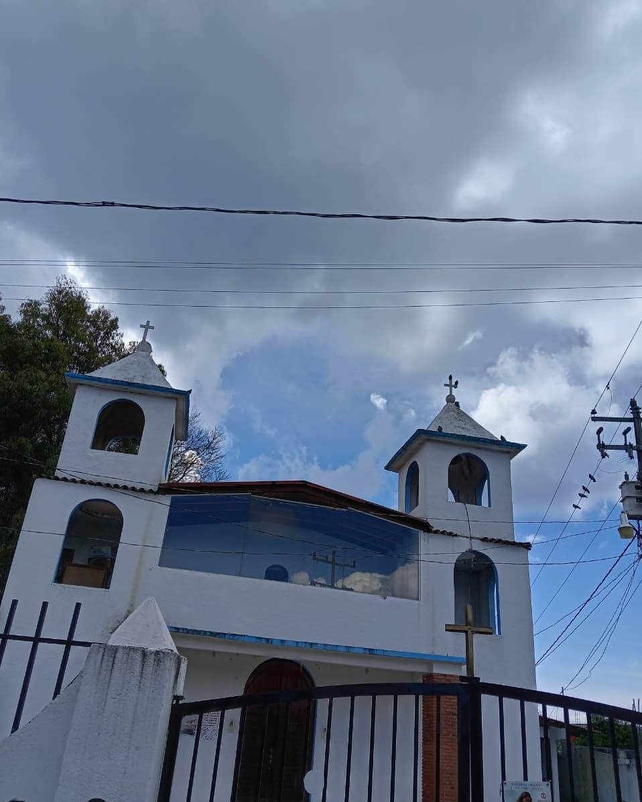
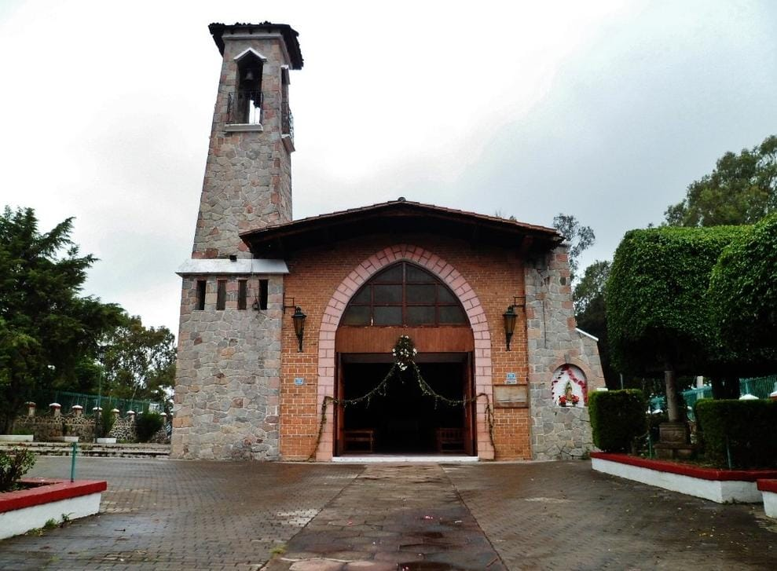

"Monumentos históricos de Valle de Bravo y Festividades."

Se le celebra a San Francisco de Asís.
Es la parroquia principal de Valle de Bravo, está en la plaza principal.Historia: La empezaron los franciscanos en el siglo XVI. La construcción actual empezó en 1880 y terminó en 1994, o sea tardó más de 100 años.Cómo es: Tiene dos torres gemelas de estilo neoclásico, son las torres religiosas más altas del Estado de México. Adentro guarda piezas originales del siglo XVII como su pila bautismal y una talla de San Francisco

Celebra al Cristo Negro.
Historia: Al principio se llamaba Capilla del Calvario. La reconstruyeron en 1864 y nunca la terminaron del todo. Es del siglo XVII.Cómo es: Es famosa porque adentro está el Cristo Negro, muy venerado y al que le atribuyen milagros. También tiene 4 lienzos gigantes que cuentan su leyenda.Leyenda: Era un Cristo blanco, hubo un incendio en su ermita y no se quemó, solo se puso negro. Por eso la gente dice que es milagroso.Fiesta: 3 de mayo, fiesta del Señor de Santa María, llegan fieles de todo México.

Celebra San Juan Diego.
Historia: Es una construcción muy antigua, de origen colonial, que nació como capilla para la gente del campo que vivía alejada del centro.Cómo es: Es chiquita, sencilla, de piedra y teja, muy estilo Valle de Bravo. No es tan grande ni famosa como la del centro, es más de comunidad.

Celebra a la Virgen de Guadalupe.
Historia: Es una capilla chiquita dedicada a la Virgen de Guadalupe. La renovaron a mediados del siglo XX.Cómo es: Muy pequeña, sencilla, pero muy visitada porque está a la entrada del centro.Fiesta: 12 de diciembre, Día de la Virgen de Guadalupe, con misa y fiesta todo el día.